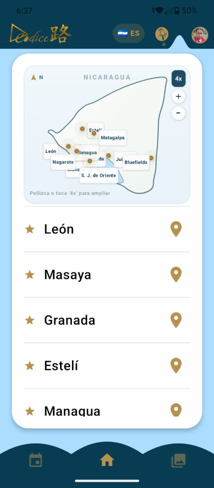
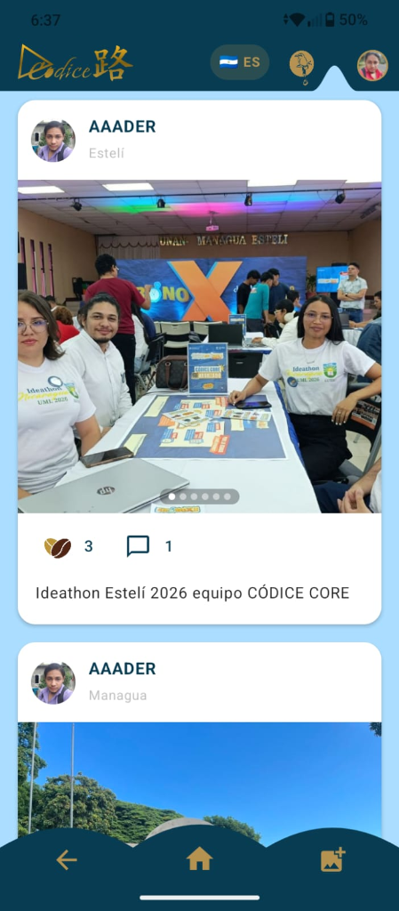

La plataforma digital que transforma tu viaje. Recorre circuitos creativos en las 10 ciudades emblemáticas, valida tus visitas históricas con GPS inteligente, gana Granos de Café y apoya directamente a los protagonistas y artesanos locales.
Red Nacional Creativa


Precisión por Coordenadas
Codice路 combina geo-inteligencia, gamificación y promoción económica para crear una experiencia inmersiva para el turismo nacional e internacional.
Explora rutas temáticas curadas por historiadores y artesanos. Descubre mitos, leyendas, arquitectura colonial y centros gastronómicos en mapas interactivos de alta definición.
El sistema comprueba que estés físicamente en el lugar usando la fórmula trigonométrica de Haversine dentro de un radio de tolerancia, desbloqueando contenido exclusivo e insignias.
Acumula Granos de Café virtuales cada vez que visitas un punto histórico o asistes a ferias y talleres. Sube de nivel en el ranking cultural y canjea reconocimientos.
Conecta directamente con ceramistas, pintores, escultores y emprendedores locales. Revisa sus catálogos comerciales de productos típicos y agenda tus visitas.
Mantente al día con ferias de arte, exposiciones, bailes tradicionales y festivales folklóricos en las 10 ciudades. Confirma tu asistencia y gana puntos adicionales.
Un portal dedicado para inversionistas y proyectos de impacto que buscan dinamizar la economía creativa y generar desarrollo sostenible en las comunidades.
Cada ciudad posee un legado ancestral, tradiciones vivas y expresiones creativas únicas listas para ser descubiertas en la app.
Famosa por sus murales revolucionarios, arte callejero, música norteña y tradición tabacalera de calidad mundial.
Sede de la majestuosa Basílica Catedral, museos de arte contemporáneo, poesía dariana y fervor tradicional.
Reconocida por su pulcritud urbana, delicias gastronómicas como el quesillo tradicional y su calidez costera.
Centro neurálgico de galerías, teatros nacionales, puerto Salvador Allende y convergencia cultural.
Corazón de la marimba, bailes de negras, mercado de artesanías y talleres de hamacas y cuero.
Arquitectura colonial pristina frente al Gran Lago Cocibolca, poetas insignes y rica gastronomía mestiza.
Maestros artesanos que preservan técnicas milenarias del barro precolombino con diseños geométricos admirables.
Riqueza arqueológica, monolitos chontaleños, museos prehistóricos y profundas tradiciones hípicas.
Neblinas, montañas verdes, cafetales de altura, polkas y mazurcas que adornan las rutas de agroturismo.
Palo de Mayo, herencia afrodescendiente y de pueblos originarios, gastronomía con coco y diversidad multilingüe.
Codice路 ya está disponible en archivo APK oficial de descarga directa para teléfonos Android y muy pronto en la tienda Google Play. ¡Descárgala y experimenta las rutas culturales!
Sin spam. La APK ya está disponible para descarga inmediata; te notificaremos cuando la ficha de Google Play esté habilitada.
¡Codice路 estará disponible muy pronto en Google Play!
La aplicación móvil nativa se encuentra en proceso de validación en Google Play Console para garantizar la máxima seguridad, rendimiento y compatibilidad con las últimas versiones de Android.
Déjanos tu correo y te enviaremos el enlace directo de descarga e invitación beta tan pronto sea liberada en la tienda.
Descarga e instalación de la aplicación Codice路
Obtén siempre la versión más reciente del paquete codise.apk compilado oficialmente desde el repositorio GitHub.
Bienvenido a Codice路. Los presentes Términos y Condiciones regulan el acceso, descarga, navegación y utilización de la aplicación móvil Codice路, su sitio web y los servicios de la API asociados, desarrollados para la promoción de la Red Nacional de Ciudades Creativas de Nicaragua. Al instalar, registrarse o utilizar la plataforma, el usuario declara haber leído, comprendido y aceptado plenamente estos términos.
Codice路 es una plataforma tecnológica orientada a conectar a turistas nacionales e internacionales con los circuitos creativos, históricos, gastronómicos y culturales de las 10 Ciudades Creativas de Nicaragua (Estelí, León, Nagarote, Managua, Masaya, Granada, San Juan de Oriente, Juigalpa, Matagalpa y Bluefields). La aplicación permite consultar mapas temáticos, localizar puntos de interés (POI), registrar visitas en tiempo real, interactuar con publicaciones comunitarias y conocer la oferta de protagonistas y empresas locales.
El acceso a determinadas funciones (como la validación de visitas por GPS, acumulación de recompensas y publicación de comentarios) requiere la creación de una cuenta de usuario mediante correo electrónico y contraseña o mediante autenticación federada con Google OAuth. El usuario es el único responsable de mantener la confidencialidad de sus credenciales y de todas las actividades efectuadas bajo su cuenta. Codice路 se reserva el derecho de suspender o cancelar cuentas que incumplan estas condiciones o que utilicen datos falsificados.
Para validar una visita a un punto de interés o confirmar la asistencia a un evento cultural, el usuario debe otorgar permisos de acceso a la ubicación por satélite (GPS) de su dispositivo móvil. Codice路 implementa un algoritmo matemático de validación geográfica basado en la fórmula de Haversine, que calcula la distancia ortodrómica entre las coordenadas enviadas por el dispositivo y las coordenadas oficiales del sitio:
Los usuarios pueden acumular puntos de fidelidad denominados "Granos de Café" al completar visitas a circuitos creativos, asistir a eventos culturales o interactuar de manera constructiva en la comunidad.
Los usuarios pueden publicar opiniones, valoraciones y fotografías en la galería comunitaria. El usuario garantiza que es titular o tiene autorización suficiente sobre cualquier contenido compartido. Queda prohibido publicar contenido difamatorio, obsceno, discriminatorio, que viole derechos de propiedad intelectual de terceros o que afecte el patrimonio cultural de las comunidades. Codice路 se reserva el derecho de moderar, ocultar o eliminar cualquier contenido que contravenga estas directrices.
La plataforma exhibe información, catálogos comerciales y datos de contacto de artesanos, artistas y empresas pertenecientes a la Red de Ciudades Creativas. Codice路 actúa como un canal de divulgación y promoción cultural; no es parte ni interviene en las transacciones comerciales, compras o contratos de servicios pactados de forma privada entre el usuario y los negocios locales.
La sección de oportunidades de inversión turística tiene carácter exclusivamente informativo y de fomento del desarrollo económico local. Ninguna publicación debe interpretarse como asesoramiento financiero o invitación formal vinculante a la captación de fondos regulados.
El nombre Codice路, logotipos, código fuente del backend y frontend, bases de datos, diseños gráficos, iconografía y mapas son propiedad de los titulares del proyecto o se utilizan bajo las licencias correspondientes. Se prohíbe su reproducción, distribución o ingeniería inversa sin autorización previa y por escrito.
Codice路 se proporciona "tal cual" y según disponibilidad. Aunque realizamos los máximos esfuerzos para garantizar la precisión de la información y el funcionamiento continuo del servicio, no garantizamos la disponibilidad ininterrumpida de la app ni la exactitud absoluta de horarios o eventos organizados por terceros independientes.
Estos Términos y Condiciones se rigen e interpretan de conformidad con las leyes vigentes de la República de Nicaragua. Cualquier controversia derivada del uso de la plataforma será sometida a los tribunales competentes de la República de Nicaragua.
En Codice路 nos tomamos muy en serio la privacidad y la protección de los datos de nuestros usuarios. Esta política detalla qué información recopilamos, con qué finalidad la tratamos y cuáles son los derechos que te asisten.
Para brindarte los servicios de la aplicación móvil y la plataforma web, recopilamos las siguientes categorías de datos:
Los datos personales son tratados con las siguientes finalidades legítimas:
Si decides iniciar sesión a través de Google Sign-In, recibiremos de Google únicamente tu nombre, dirección de correo electrónico y foto de perfil pública para crear o sincronizar tu cuenta en Codice路. En ningún momento accedemos a tus contraseñas de Google, contactos u otra información privada almacenada en tu cuenta de Google.
Toda la información se transmite mediante protocolos criptográficos seguros (HTTPS / TLS). Las contraseñas se almacenan mediante funciones de derivación criptográfica unidireccional (hashing seguro PBKDF2/Argon2). Los archivos multimedia se almacenan en servidores dedicados o contenedores en la nube con controles de acceso restringidos.
No vendemos, alquilamos ni comercializamos tus datos personales a empresas publicitarias o terceros ajenos. Únicamente se podrá compartir información estadística anonimizada con los comités de la Red Nacional de Ciudades Creativas para evaluar el impacto del turismo cultural, sin revelar en ningún caso datos identificativos de usuarios individuales.
En cualquier momento, puedes ejercer tus derechos para acceder a los datos que conservamos sobre ti, rectificar información inexacta o solicitar la eliminación definitiva de tu cuenta y de los datos asociados enviando una solicitud a través de los canales de soporte.
La plataforma no recopila intencionadamente datos de menores de 14 años sin el consentimiento o supervisión de sus padres o tutores legales.
Podremos actualizar periódicamente esta política para reflejar mejoras funcionales o cambios legislativos. Cualquier modificación sustancial será notificada a través de la aplicación o en este sitio web.
Para dudas, consultas o solicitudes relacionadas con el tratamiento de tus datos personales, puedes comunicarte con el equipo responsable a través del correo de soporte técnico oficial o mediante el repositorio del proyecto.